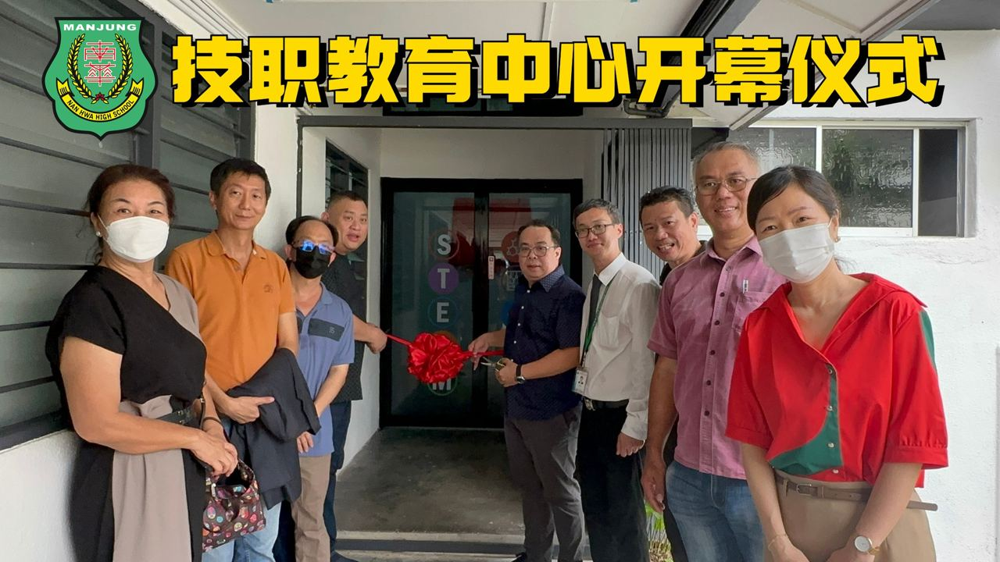
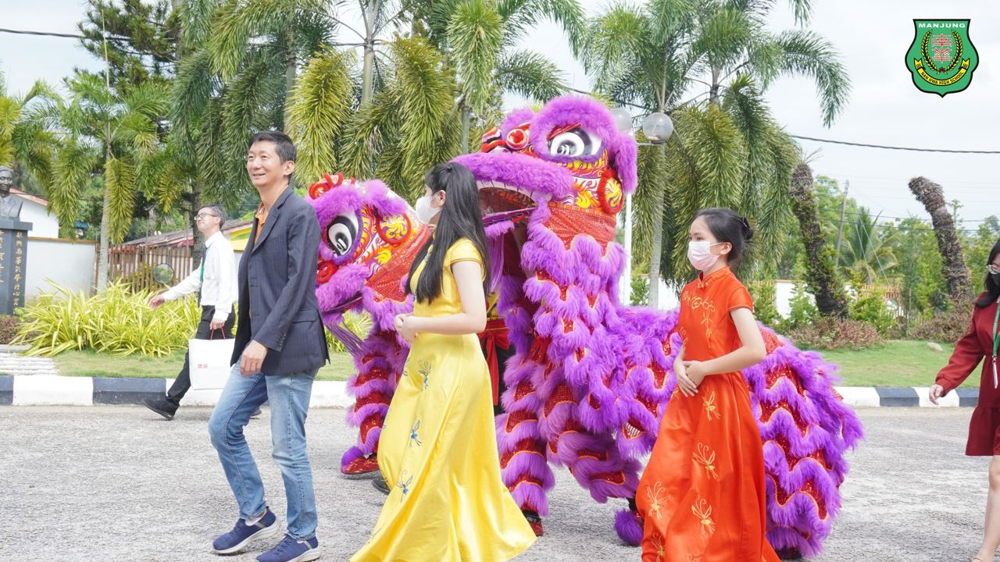
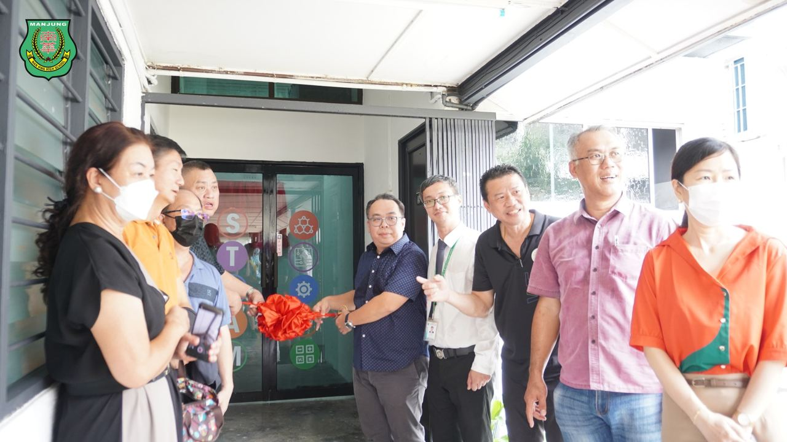
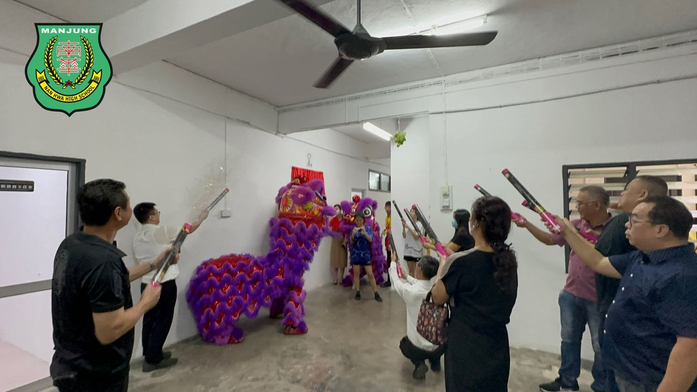
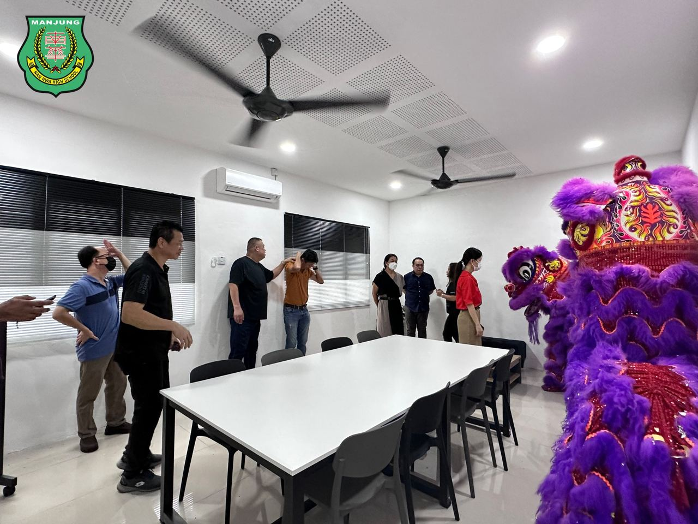
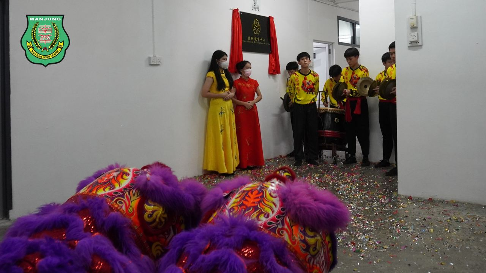
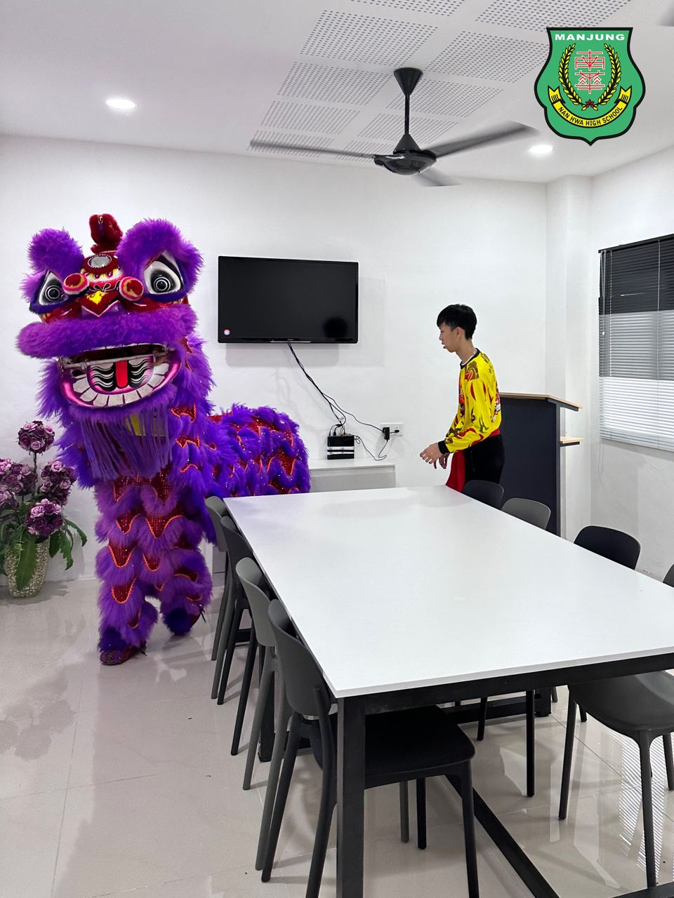
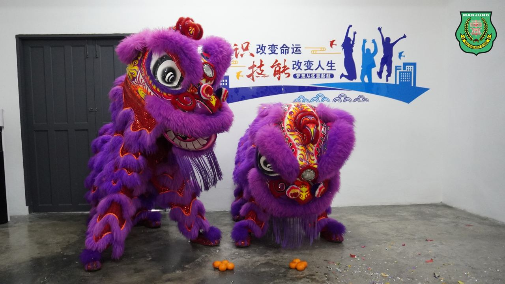

技职教育中心隆重举行开幕仪式
技职教育中心隆重举行开幕仪式
南华独中技职教育中心于五月下旬举行开幕仪式。本次开幕仪式标志着南华独中在技职教育领域迈出了重要的一步，展示该校对于培养具备实际技能和创新能力的人才的坚定承诺。
南华独中自去年起，便重点巩固学术课程、展开“五大领域·十八门校本课程”与“高中选修课”，如今随着技职教育中心的开幕，意味着学术与技职课程体系趋向完善。多元化的课程将为学生培养多方面的兴趣，与此同时也提供广泛而深入的技术教育和技能培养。中心配备了各个教室空间、工作坊和设施，致力于培养学生在各个领域中的实际技能和创新思维。
董事长颜登逸在开幕上表示，技职教育是一扇通往兴趣的大门，老师扮演向导的角色，带领着学生探索门后广阔的世界，希望通过技职教育的力量，将学生培养成能够迎接未来的挑战并成为社会所需的优秀人才。
出席开幕者包括有：董事长颜登逸、副董事长拿督叶绍利、副董事长拿督王志在、董事总务何添胜、副总务林道祥、董事梁志文、董事吴明月、校长陈丽冰博士、技职教育主任万顺华老师。
#技职教育中心 #开幕仪式
#南华独中 #曼绒 #实兆远







